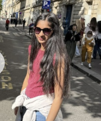
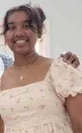
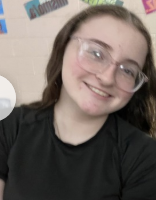
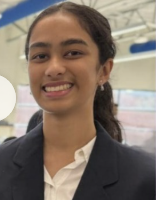
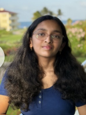
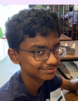

We are a student-led STEM nonprofit that aims to empower today’s youth. Established in 2025, our organization has spread across Georgia. Sparking wonder and knowledge through our interactive workshops and personalized tutoring programs.

President and Founder
ARSHIA BAJAJ
Hi everybody! I am excited to serve as the founder and president of WonderStemFulL. I am currently a Junior at South Forsyth High, where I am actively involved in various STEM organizations and projects, including coding, TSA, FBLA, and the Math Team. Through this organization, I aspire to create accessible education for all, especially underprivileged youth! Apart from this, a fun fact about me is that I once received a letter back from Barack Obama! I am so ready for the journey ahead! 🚀

Operation and Logistics Manager
ABIGAIL JOSHUA‑SUNDERRAJ
Hi, I'm Abigail! I'm 15 and will be a sophomore at South High. I enjoy singing, cooking as well as baking and love playing with my dog. I am really interested in Healthcare and have a really big passion in serving others. I am very excited and look forward to join the WonderStemFul team to collaborate on promoting STEM through grades K-8 with lots of fun and creative activities and workshops!

Fundraising Manager
KATIE CERUTO
Hi, I’m Katie Ceruto and I’m a sophomore at South Forsyth High School. I love reading, writing, math, history, and healthcare. I’ve always loved working with kids and helping people. I already work with my Scouting America troop and have felt so happy helping others achieve their goals. I can’t wait to see the good that WonderStemFul will bring!

Stem Educator
AKSHATA JOSHI
Hi! My name is Akshata and I'm a rising junior at South Forsyth High School. I love dance and drawing/painting. I'm interested in math and science subjects. I really enjoy STEM projects and want to help others learn new things!

Volunteer Coordinator
ANVITHA KATTA
Hey! My name is Anvitha Katta, and I’m so excited to work with you all this year! I’m passionate about making STEM more welcoming and accessible for everyone, and I can’t wait to help, support, and grow together this year!

Operation and Logistics Manager
AKSHAY DEVARAKONDA
I am Akshay Devarakonda, a rising sophomore at Denmark High School. I'm interested in business/eutrepreneurship and starting my own someday. I am in the FBLA and TSA Club at my school and have received the Presidential Award Gold in the organization of Manabadi. I want to be a part of the revolution to make AI safe, accurate, and accessible to all people, which I can achieve through educating people in the technology field of STEM. This is who I am.